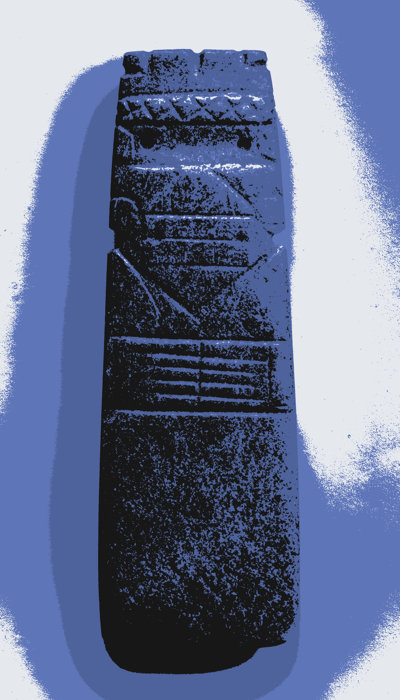

“█
█▄▄o hemos adoptado como un hijo más”. “[...] como un hijo más”. “[...] como un hijo [...]” La frase se iba disolviendo lentamente, como el contexto que la ataba —la presentación de aquel chiquillo—, evocando un ligero pinchazo en lo más profundo del hipotálamo. Así es como mueren los recuerdos, sin explosión alguna, solo el regusto metálico de saber que antes había allí algo, precedido del desconocimiento de esa misma afirmación. Tras sus cientos de arrugas contempló a aquella mujer que ya no era su hija, ya sin la única frase que lo anclaba a ella. "¿Perdona, te conozco?"
Como un Hijo Más
